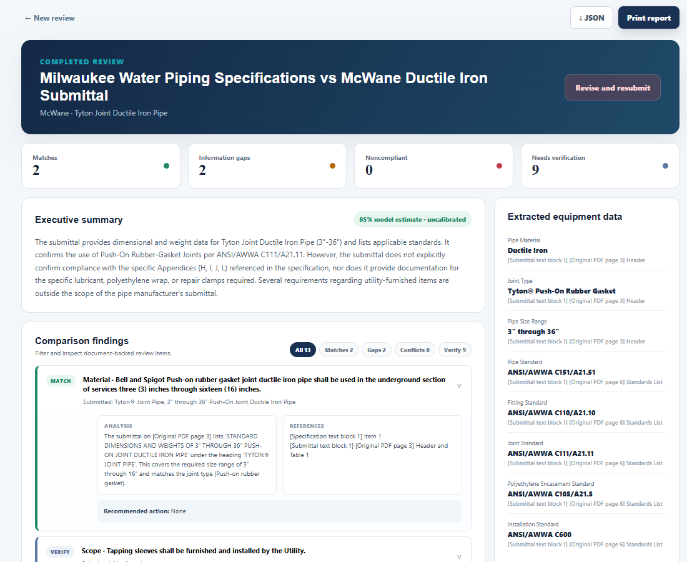

Document comparison
Compare and match vendor submittals with project specifications.
For project, civil, and structural engineers
SpecLens helps project, civil, and structural engineers compare vendor submittals with project specifications, with the aim of reducing time spent on document review.
View demo previewThis page introduces the product. It does not run the AI tool.
The problem
Project engineers, civil engineers, and structural engineers compare vendor submittals against project specifications. Comparing and reviewing those documents can take many hours.
SpecLens explores a workflow for bringing that comparison together. Any time-saving benefit still needs to be tested.
How it works
The product workflow is described below. No document processing takes place on this introduction page.
Start with a vendor submittal and the project specifications to compare.
Use the tool’s API/model connection to compare and match the documents.
Verify the findings and source references, then export the report as JSON or use the print view.
Prototype preview

Compare and match vendor submittals with project specifications.
Download the structured review as JSON or use the printable report view.
The testing prototype uses Clemson RCD’s qwen3.8-27b-fp8 model to generate a structured review draft.
Evidence and limits
Benefits not yet validated.
One saved excerpt-comparison test returned a structured report with 13 findings. This demonstrates a completed request and report rendering; it does not establish correctness, completeness, or time savings. No measured accuracy or time-saving study is available.
Next step
Use the demo preview above to inspect the report layout and the kinds of findings it presents. A public interactive demo or video is not available; this introduction remains separate from the AI tool.
Read the saved sample report and its scope
Civil-engineering class project. Team and contact details are intentionally omitted.